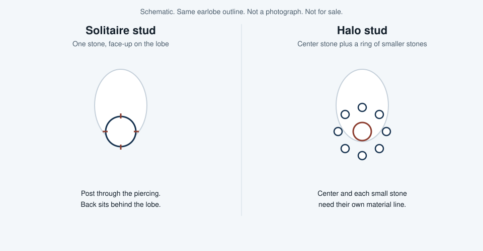
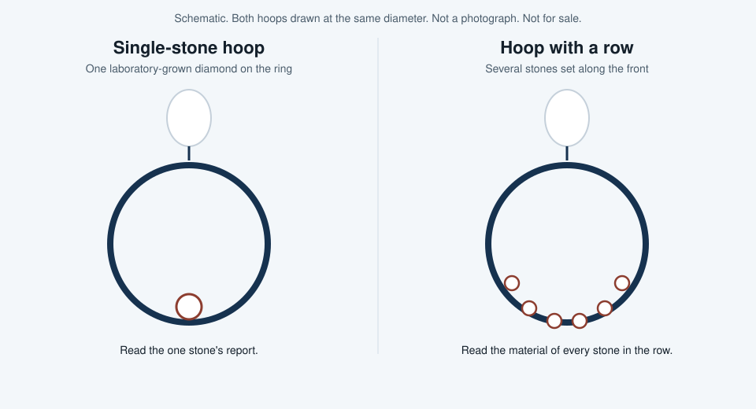
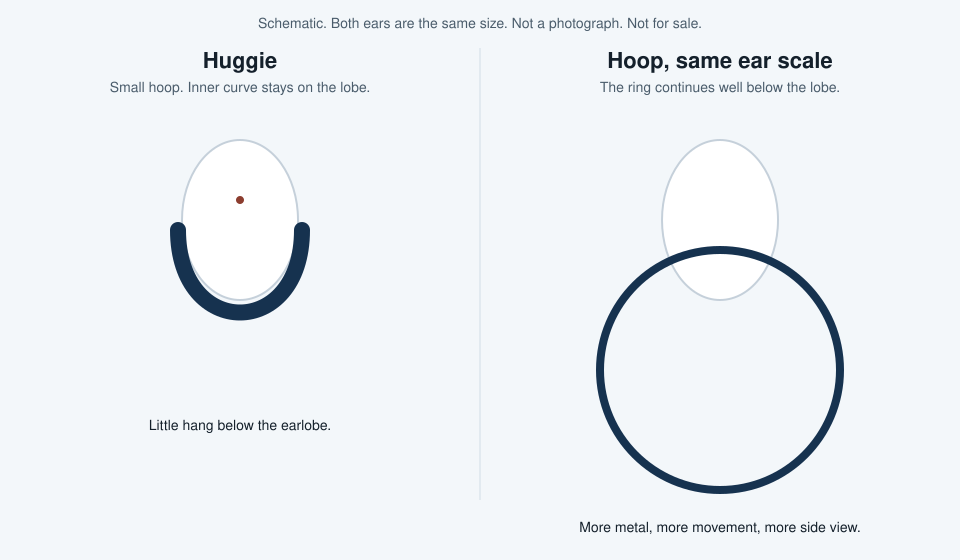
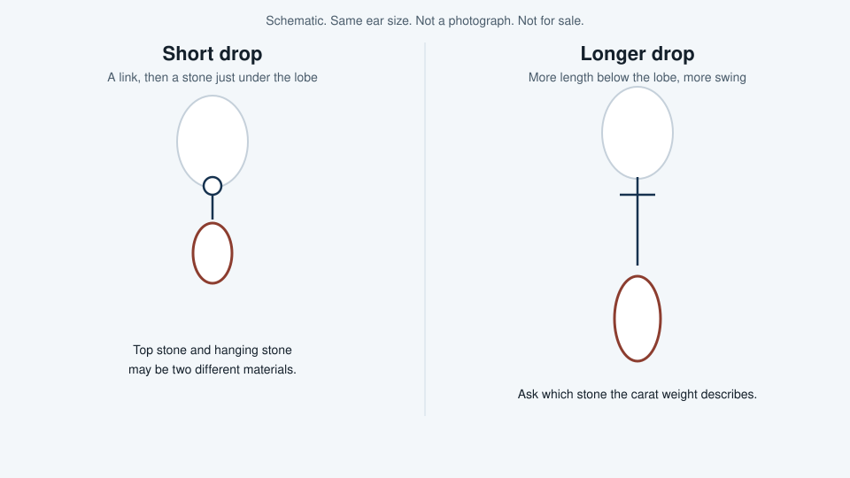
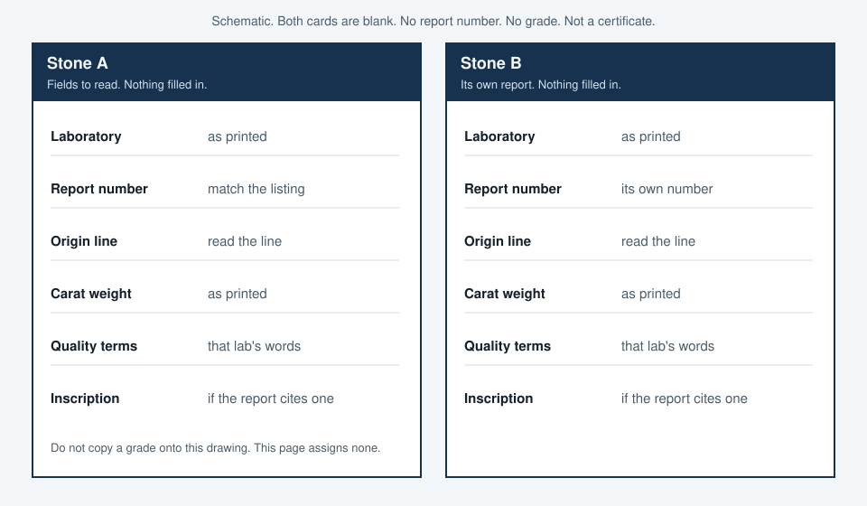
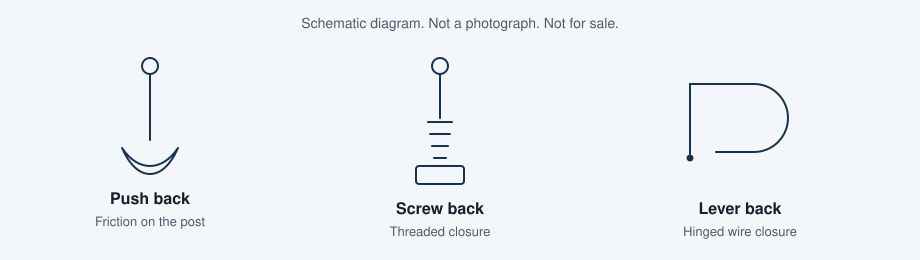

How to Choose Lab-Grown Diamond Earrings (and How They Compare with Natural Diamonds)
This page explains how to choose a pair of laboratory-grown diamond earrings and how those laboratory-grown diamonds compare with natural, mined diamonds. Every stone discussed here as a made-in-a-lab product is a laboratory-grown diamond, also called a laboratory-created diamond.
What lab-grown diamonds are — and how they compare with natural diamonds
Same material, different origin
Natural diamonds formed in the earth over a very long time. Laboratory-grown diamonds are produced in a laboratory, typically by high-pressure, high-temperature growth (HPHT) or by chemical vapor deposition (CVD), usually in weeks rather than geologic time. GIA states the comparison in “Is There a Difference Between Natural and Laboratory-Grown Diamonds?”
Laboratory-grown diamonds have essentially the same chemical, physical, and optical properties as natural diamonds. The difference is origin: natural diamonds formed in the earth; laboratory-grown diamonds are produced in a lab, usually by HPHT or CVD methods. They are diamonds, not glass or cubic zirconia, but they are not mined diamonds. A shopper should look for a clear “laboratory-grown” or “laboratory-created” label and a report from an independent gemological lab. Only specialized laboratory testing, not the naked eye, can reliably separate lab-grown from natural diamonds.
You cannot tell them apart by eye
GIA states that traditional observations and older diamond detectors are not reliable for telling natural diamonds from laboratory-grown diamonds. Identification needs a professional gemological laboratory or purpose-built screening equipment. This site cannot authenticate a stone. If a listing never says laboratory-grown diamond or natural diamond, do not guess the origin from a photo.
Buying tradeoffs, without invented numbers
Visually they can look the same. The practical differences are origin, how they are identified and reported, and typical buying tradeoffs such as retail price and resale, which vary by listing and should be checked at the time of purchase rather than assumed from a single published figure. This page is a buying guide, not a seller, and it does not grade stones or promise investment value.
Laboratory-grown diamonds and natural diamonds are often priced differently. Some buyers still choose natural diamonds for resale. Forbes Vetted’s 2026 article (updated July 22, 2026) discusses a lower typical retail price and weaker resale as a downside of laboratory-grown stones. It names Blue Nile as its overall pick, and Blue Nile’s Round Brilliant Stud Earrings as its top laboratory-grown diamond earrings pick in a related list. That is Forbes’s published landscape, not a ranking by this page. Dollar examples and percentages from that article are not repeated here. How to line two listings up, without a price invented on this page, is in the price section.
Not the same as simulants
Moissanite and cubic zirconia are different materials, sold as lookalikes. They are not laboratory-grown diamonds and they are not natural diamonds. The listing and the report should say laboratory-grown or laboratory-created when that is the stone, and should name moissanite or cubic zirconia when that is the stone. This page gives no optical or hardness figures for those other materials. Read the material line.
How to choose lab-grown diamond earrings
Start with the earring style you will actually wear (studs, hoops, huggies, or drops). Then read the grading or quality report that comes with each stone, including carat, color, clarity, and cut as that lab presents them, and confirm the pair is matched. Check the metal, setting, and earring back, and confirm the retailer’s return and warranty terms on the product page. Look for a “Laboratory-Grown” inscription or an equivalent report statement so the origin is clear.
The four styles below are drawn separately, with the variants a listing usually means by those names. They are not the same piece of jewelry at different sizes. Compare how the laboratory-grown diamond is worn, what else is on the earring, and whether a second stone is even the same material.
Studs

A stud holds the laboratory-grown diamond on the front of the earlobe. The post passes through the piercing. The back, drawn later, clamps or screws on behind the lobe. From the front you see the face of the stone and a little metal. From the side you see mostly the lobe, not a hanging shape. Studs move less than hoops or drops, so they catch hair and collars less often. People choose them for workdays and for ears that they do not want a ring swinging from.
A solitaire stud is one laboratory-grown diamond. The report for that stone is the report for the earring, and the other ear needs its own. A halo stud adds a ring of smaller stones around the center. Those smaller stones are not automatically the same laboratory-grown diamond as the center. The listing has to name each one: laboratory-grown diamond, natural diamond, or another material such as moissanite. One “laboratory-grown” in the product title does not cover the halo.
When you compare two stud pairs, compare the face-up stones, the metal of the posts, and the back type. A solitaire and a halo with the same center carat weight are different objects. The halo has more stones and more metal around them.
Hoops

A hoop is a ring that passes through the piercing and hangs below the lobe. You see it from the side as well as from the front. A larger diameter means more of the ring shows under the ear and, usually, more metal. Hinges and click closures are common. The listing should name the closure. This page does not.
A single-stone hoop puts one laboratory-grown diamond on that ring, often at the front. The rest of what you see is metal. A hoop with a row sets several stones along the front, or all the way around. Those stones can be small. “Total carat weight” on that row is not the same fact as the carat weight of one stud. Read whether the listing gives a weight per stone, a total, or both, and whether every stone in the row is a laboratory-grown diamond. A row of moissanite on a gold hoop is a different purchase from a row of laboratory-grown diamonds, even when the hoops are the same diameter.
Hoops suit people who want the earring’s shape to show beside the face. A large hoop is more visible at a distance than a stud. It also swings. If you are comparing a hoop pair with a stud pair, you are comparing different amounts of metal and different ways of wearing the stone, not two prices for the same object.
Huggies

A huggie is a small hoop. The inner curve sits against the lobe instead of dropping into a wide ring under it. The drawing puts a huggie and a hoop on ears of the same size so the hang is the comparison, not an artistic difference. Huggies are the hoop people pick when they want a curve of metal or a short line of stones, and they still want the earring close to the ear for a full day.
A plain huggie may be metal only, with no laboratory-grown diamond at all. Read the title before you assume there is a stone. A huggie set with stones along the front has the same problem as a hoop with a row: each stone needs a material. If the stones are laboratory-grown diamonds, ask whether you get a report per stone, one jewelry report for the pair, or no report. A missing report is not a style. It is a missing check, covered in the verification section.
Against studs, a huggie shows a curve rather than one face-up stone. Against a larger hoop, it shows less metal below the lobe and usually moves less. The hinge still matters. A huggie that pinches is a fit question for the retailer’s return terms, not a fact this page can measure.
Drops

A drop hangs below the lobe from a link, a short wire, or a small top stone. The length is the point. A short drop sits just under the ear. A longer drop moves when you turn your head and is the style people usually mean by an occasion earring. The drawing keeps the ear the same size so the extra length is obvious.
Drops often combine two stones: one at the ear and one at the bottom. Either can be a laboratory-grown diamond, a natural diamond, or something else. Read both. The carat weight in the title may describe only the hanging stone, only the top, or a total. The listing has to say which. A pair of drops should also match in length. Two laboratory-grown diamonds with the same carat weight can still hang at different lengths if the links differ. Look at photos of both earrings. One hero image is not the pair.
Compared with studs, drops trade a quiet front view for movement and length. Compared with hoops, the shape is a hanging element rather than a closed ring. They catch on scarves and collars more readily than studs. That is a wearing difference, not a quality grade.
What to line up when you compare styles
| Style | Where it sits | What you are usually buying | Easy to miss |
|---|---|---|---|
| Stud | On the front of the lobe | One face-up laboratory-grown diamond per ear, or a center plus a halo | Halo stones are separate materials. The back is part of the fit. |
| Huggie | Against the lobe | A small hoop, metal only or set with a short row | The title can hide the material. Read the stone line. Inner diameter is the fit. |
| Hoop | A ring below the lobe | More metal, one stone or a row, visible from the side | Total carat weight is not one stone’s weight. Diameter changes the metal. |
| Drop | Hanging under the lobe | Length and at least one hanging stone | Top stone and drop may differ. Length should match left and right. |
A matched pair agrees on carat weight and on the quality terms the reports actually print, and the listing shows both earrings. This page sets no numeric tolerance for a weight gap. One report for two stones is incomplete until the retailer identifies the second laboratory-grown diamond. This site cannot confirm a match from a photo.
How to judge whether a price is reasonable
No price is quoted on this page. A current retailer listing was not retrieved for this revision on 2026-11-12. Nothing here is a list price, a sale price, a market price, or a savings percentage. Do not estimate one from this text. Open the listing you are actually considering and read the figure there, on that day.
A price is reasonable only against another offer for the same kind of earring. Two tags can be far apart because the earrings are far apart: different carat weights, different quality words, different metal, a halo on one and a solitaire on the other, one report instead of two. Dividing the tag by carat weight does not fix that. A per-carat figure, or any other unit price, still hides the second stone, the grams of metal, the setting work, and a missing document.
Use the same reading on both listings before you decide one is the better buy. If a line is absent, the listings are not comparable yet. Ask for the missing line. Do not fill it in.
| Line them up on | What to read | Why a unit price skips it |
|---|---|---|
| Carat weight | The weight printed for each laboratory-grown diamond. If the listing says only a total, note that both listings use a total, and do not pretend you have a per-stone weight. | Per carat ignores how the weight is split across a pair, a halo, or a row. |
| Color, clarity, cut, or the laboratory’s current quality words | The words on that report. For a GIA assessment under the service effective 1 October 2025, those words are Premium or Standard, not a letter grade. Details are in the verification section. | A per-carat number cannot tell Premium from an older letter grade, or from another laboratory’s abbreviations. Those are not one scale. |
| Metal and metal weight | 14k gold, 18k gold, platinum, or whatever the listing names. If it also states a gram weight, use that. If it does not, do not invent one. | A hoop contains more metal than a stud of the same stone. The unit price of the stone does not price the hoop. |
| Setting | Solitaire, bezel, halo, single stone on a hoop, or a row. The style drawings above are the shapes. | A halo or a row adds stones and labor. Those stones may not be laboratory-grown diamonds. |
| Matched pair | Two reports, or one jewelry report that identifies both earrings, plus photos of both. | One priced stone is not a pair. A unit price will not show that the second earring is undocumented. |
| Complete reports | Laboratory name, number, origin line, carat, and the quality terms, for each laboratory-grown diamond you are paying for. | A lower tag with no report is not a measured discount. The quality is unread. |
Resale is a separate question from the tag. Forbes Vetted’s 2026 article treats weaker resale as a downside of laboratory-grown stones and does not give you a number to reuse. This page does not predict what a pair will sell for later, and it does not promise that a lower tag is the better purchase. After the lines above match, the remaining difference is the price on the two listings you have open. Read those listings. They were not copied here.
Verify the report before you rely on it
Read carat, color, clarity, and cut as they appear on the document with the listing, or read the quality words that laboratory uses now. GIA and IGI are the independent laboratories you will see most often. Forbes Vetted notes that IGI is widely used for laboratory-grown stones, and some retailers also mention GCAL. Naming them is not a ranking and not a grade from this site.
The figure is a blank pair of field lists. It is not a GIA sample and not an IGI sample. No report number and no grade are written on it. GIA publishes sample layouts, with the laboratory named, at GIA sample laboratory-grown diamond services. Those samples belong to GIA. This page does not copy a grade off them, and it does not assign one to any earring.

- Make the numbers match. Copy the report or assessment number from the listing. Find that same number on the document image or PDF. If the listing number and the document number differ, stop and ask the retailer which document belongs to this pair. This preview cannot reconcile them.
- Look the number up at that laboratory. Use the public check published by the laboratory named on the report. GIA’s report check is at gia.edu/report-check. This preview did not submit a report number, so it quotes no lookup result. Enter the number from your listing. The result should show that number, the carat weight, and an origin consistent with a laboratory-grown diamond. If the lookup says the number is not found, do not substitute the product photo. IGI verify addresses tried on 2026-11-12 returned HTTP 403 from this environment, so no IGI lookup result is described here. Use the verify address printed on the IGI report itself. IGI also explains its layout on how to read an IGI laboratory-grown diamond report.
- Read the origin line. On the document and on the lookup, look for laboratory-grown or laboratory-created. GIA’s wording on its current service is “Laboratory-Grown.” “Cultured” alone is not enough. If the line does not state the origin, the report has not told you whether the stone is a laboratory-grown diamond or a natural diamond.
- Read the inscription line. GIA’s current laboratory-grown diamond service laser-inscribes “Laboratory-Grown” and the assessment number on the girdle. That is stated on GIA’s services page. The report’s inscription line is what you can check from the listing. A normal product photo will not show the girdle clearly. A jeweler with a loupe can read it later. This site cannot.
- Read the quality words that this report uses, and do not translate them. GIA’s labels changed over time: broader categories in 2019, later the 4Cs, then Premium or Standard. The Premium / Standard assessment was announced on 26 August 2025 and took effect on 1 October 2025. It is an overall look at clarity, color, and cut, in a format distinct from GIA’s report for natural diamonds. Premium and Standard are not D-to-Z letters and they are not VVS or VS abbreviations. Do not treat an older GIA report that still prints letters as if it were on the Premium / Standard scale, and do not line those letters up against an IGI abbreviation as if the scales were the same. Read the words in front of you. A laboratory-grown diamond that does not meet GIA’s minimum for Standard does not receive that assessment. This page assigns no grade.
- Give the second stone its own check. A pair is two laboratory-grown diamonds. Each needs a report number, or both need to be identified on one jewelry report. Run the match, the lookup, the origin line, and the quality words for the second stone. Then see whether carat weight and quality words agree. This page does not set an allowed gap. If only one number is offered for two stones, the second stone is not verified.
Setting, metal, and backs

Prongs leave more of the laboratory-grown diamond visible and can snag. A bezel covers the edge. For a halo, the listing should say whether each smaller stone is a laboratory-grown diamond, a natural diamond, or another material. One “laboratory-grown” in the title does not settle the halo.
14k gold, 18k gold, and platinum are listing categories, not metals this site sells. Karat is a gold mark. If the listing says white gold, check whether it mentions rhodium plating. A push back can loosen. A screw back threads on. Hoops and drops may use a lever or a hinge. Read the post and the back if skin reactions matter. Return, warranty, and tightening terms stay on the retailer page. This preview states none of them.
A short pre-purchase checklist
- The report is present, and its number matches the listing.
- “Laboratory-grown,” or an equivalent origin line, is clear on the report and, if an inscription is cited, on the stone.
- The pair matches on carat weight, cut, color, and clarity as the reports state them.
- Metal, setting, and back type are stated, including the post or wire if that metal matters.
- The return window, and any warranty you care about, is on the retailer page.
- Any side stone is named as a laboratory-grown diamond, a natural diamond, or another material.
- The two listings you compare match on the price-section lines. This page does not quote a price. A live listing was not retrieved on 2026-11-12.
Where to shop (placeholder referrals only)
The names are examples from the Forbes Vetted 2026 roundup or the public program check of 2026-11-12, in that order, not as a score. This site does not sell the earrings.
Blue Nile
Official program page: bluenile.com/affiliates. Commission rate: not found. Approved markets: not published. The public Impact page showed an application entrance and no rate.
[Affiliate link — placeholder; not enrolled / commission not found]
Brilliant Earth
Official page: brilliantearth.com/affiliates/. Copied sentence, retrieved 2026-11-12 10:06–10:08 Asia/Shanghai, not a commission this site has earned:
“Competitive Commission Payouts - 5% Loose Diamonds, Gemstones, Engagement Rings, Wedding Bands, 7% Fine Jewelry Purchases”
The same page also states a 30 Day Cookie Window On All Online Sales and a $500 Commission Cap Per Order, paid via the Impact Platform monthly, less returns, shipping, and tax. That cap is copied program wording from the official page, retrieved 2026-11-12 10:06–10:08 Asia/Shanghai. It is not a commission this site has earned, and it is not an earring price. Approved markets: not separately listed.
[Affiliate link — placeholder; not enrolled]
Ritani
Official page: ritani.com/earn-with-ritani. Copied from that page, retrieved 2026-11-12 10:06–10:08 Asia/Shanghai: commission is 2% (Percent Of Sale), Payout Automatic. Approved-market wording on the page: “Available for US customers only”. Not a commission this site has earned.
[Affiliate link — placeholder; not enrolled]
With Clarity
The brand page and the Awin program page do not state the same ceiling. Both sentences are copied in full. Retrieved 2026-11-12 10:06–10:08 Asia/Shanghai. Neither is a commission this site has earned.
Brand page, withclarity.com/pages/affiliates:
“Earn up to 8% commission on all diamond jewelry sold up to 45 days of referral link.”
Awin official program page, ui.awin.com/merchant-profile/89517:
“Earn up to 11% commission on all diamond jewelry sold up to 45 days after the referral link.”
The Awin page also lists Attribution Period (Cookie Length) as 45 Days. Approved markets: not published on either page.
[Affiliate link — placeholder; not enrolled]
Plum Diamonds
Official page: plumdiamonds.com/pages/affilate-partnership. It says “competitive commission rates” and names ShopMy. No specific figure. Commission rate: not found. Approved markets: not published.
[Affiliate link — placeholder; not enrolled / commission not found]
Dorsey
Awin program page: Dorsey Affiliate Program. Attribution Period (Cookie Length): 7 Days. Commission rate: not found. Approved markets: not published.
[Affiliate link — placeholder; not enrolled / commission not found]
Stone and Strand
Awin program page: STONE AND STRAND Affiliate Program. Attribution Period (Cookie Length): 30 Days. Commission rate: not found. Approved markets: not published.
[Affiliate link — placeholder; not enrolled / commission not found]
Mejuri
No public terms page was found. Mejuri’s contact page lists press@mejuri.com. That is a contact, not a rate. Fine Crew’s 10% off a customer’s first order is a discount, not an affiliate commission. Commission rate: not found.
[Affiliate link — placeholder; not enrolled / commission not found]
Grown Brilliance
Public terms did not open. A footer link pointed at Impact. Commission rate: not found. Approved markets: not found.
[Affiliate link — placeholder; not enrolled / commission not found]
Aurate
No official plan page was found. Commission rate: not found. Approved markets: not found.
[Affiliate link — placeholder; not enrolled / commission not found]
Required disclosures
Laboratory-grown qualifier. Under the FTC Jewelry Guides, 16 CFR Part 23, an unqualified “diamond” is a problem when the stone is not mined. Use laboratory-grown or laboratory-created where a shopper can see it. “Cultured” is not enough on its own unless it is clearly qualified as laboratory-grown or laboratory-created. This page uses those qualifiers when it calls these stones diamonds. Natural diamonds are called natural or mined.
Material connection. Under the FTC Endorsement Guides, 16 CFR Part 255, a material connection has to be clear near the top and near the links. A footer-only note is not enough. Both disclosure boxes on this draft say the same thing: names are examples, this site is not an enrolled affiliate, and any rate sentence is copied from an official page. It is not money this site has earned. This site is not a certified seller and does not issue a grading conclusion.
FAQ
Are lab-grown diamond earrings “real” diamonds?
They are the same material as natural diamonds and they are not mined diamonds. The GIA comparison is in the first section. This page cannot tell the two apart by eye.
How should I choose a pair?
Use the style drawings to see what you would actually wear, line the price up with the six checks, then run both reports through the lookup steps. The full version of each check is above.
How do they compare with natural diamond earrings?
They can look the same. Origin, the report, and resale are what you compare. This page states no price gap and no resale figure.
What is this page’s relationship to the retailers it names?
This is a draft preview. The names are examples. We are not an enrolled affiliate. A copied commission sentence is not money this site has earned. This site does not sell the earrings and does not grade them.
Related guides
No other article is published with this preview. Later topics, with no addresses yet:
- A later laboratory-grown diamond versus moissanite explainer
- A stud-backing care note